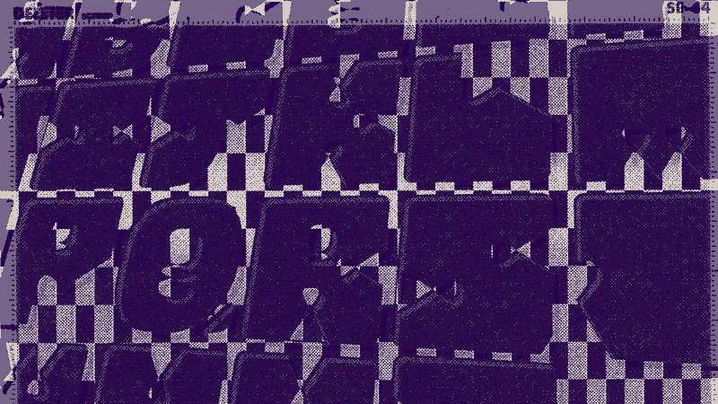

Again I came into this workshop not really knowing what to expect, but recently I have been thinking about practicing with bespoke type more. Not so much designing a whole font and all the technicalities that come with that, but more in the illustrative sense, creating it for a poster or a motion piece, for a single project. So when I was participating with the workshop I mainly just wanted to play around with letter forms more. Of course it is also nice to meet and hear from professionals in their field.
Listening and participating in the workshop and then sketching and using illustrator to produce letterforms. I tried to make a typeface that was based on a square shape, that was then altered with a curvy, stringy shape to turn it into a letter.
One thing that Liv talked about that was helpful was showing how different pieces of letter reoccur across an alphabet to create a consistency. This includes what she described as control characters.
H O D are used for uppercase as they have straight elements and curved elements
n o p are used for lowercase
As it was a relatively short workshop I just pressed on with whatever came to mind and was able to create something I was relatively happy with.